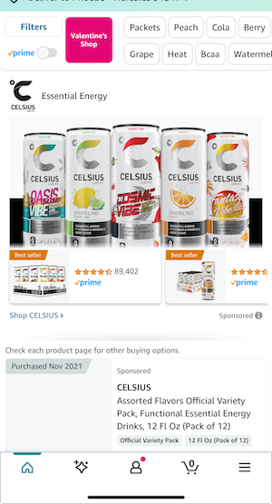
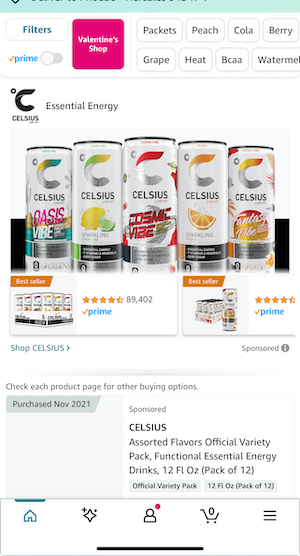

Introduction

This is Phoebe Julao. Her friends and family call her Pheebs. Her birthday is on January 24th and she's an Aquarius. She was born and raised in San Francisco. Phoebe also moved around the Bay growing up, living in places like South San Francisco and San Mateo. She currently lives in Hercules with her dog, Hiero. Phoebe is an avid collector of sneakers, hats, vinyls and random stickers. She is also a foodie who enjoys trying new dishes and going to her favorite local spots or going to food festivals. Phoebe really likes spicy food and trying random conveinience store snacks. Phoebe also played basketball growing up and loves Bay Area team sports like the Giants, Warriors, Niners, and Sharks so you may find her watching live games or at a sports bar.
Currently Phoebe is a Visual Communications Design major student at SFSU. She enjoys mixed media art such as painting, sculpture, and black and white photography. Phoebe's digital time capsule is a glimpse of her existence in her little corner of the digital world, where everyday apps and media play a daily role in her life as a design student. Though Phoebe has many interests and activities she enjoys, which you may read more about, this website is a base illustration of what digital apps and programs keep her creative, motivated, and mostly relaxed. Feel free to browse and click on the other tabs to check out more.
Phoebe starts her day with a cup of...


 

Let's talk about the fuel that powers up Phoebe's brain and creativity: coffee (and a few beverages she likes for variety and good measure.) Phoebe definitely hydrates throughout the day with lots of water generally, but if she needs a boost of energy knowing the type of day ahead, she indulges in a healthy dose of caffeine by using these apps to order her usual go-to drink options. Phoebe loves iced coffee or cold, refreshing drinks to keep her energized and awake during workdays. Beverage tech is a true gift in her opinion due to the benefits of reward points and order and pay options to utilize seamlessly through available apps while she's brainstorming her design projects. Hope you were able to grab a nice drink for yourself as well! Phoebe would suggest an iced Ginger Snap or a raspberry mocha. Maybe an Oasis Vibe Celcius? That one's pear flavored. A reminder that Phoebe does not get any commission for her drink recommendations.